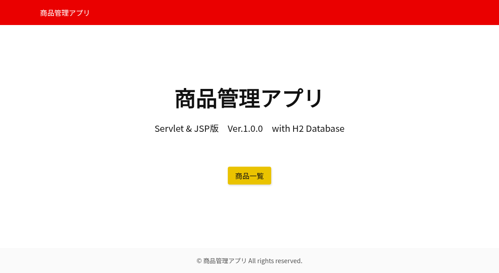

PHPで開発した在庫管理アプリをもとに、 Java Servlet・JSP・JDBCを使用して一から再設計・再実装したWebアプリケーションです。
公開URL
https://inventory-management-servlet-ea88bf3b64ea.herokuapp.com/
ソースコード
https://github.com/hiroshinomura21st/inventory-management-servlet
主な機能
商品一覧表示、商品登録、商品編集、商品削除、商品名検索、 商品名の昇順・降順ソート、処理結果メッセージの表示を実装しています。
使用技術
Java 17 / Servlet / JSP / JSTL / JDBC / Maven / H2 Database / Apache Tomcat 10 / HTML / CSS / Git / GitHub / Heroku
設計・実装について
PHP版のコードをそのままJavaへ置き換えるのではなく、 実際のアプリの動作を確認し、画面遷移やデータの流れを考えながら、 Javaらしいクラス構成で再設計しました。
Servlet、ビジネスロジック、DAO、モデルに役割を分け、 データベースへの接続処理も共通クラスへ集約しています。
工夫した点
検索条件と並び順をセッションに保存し、 商品の登録・編集・削除後も元の検索結果へ戻れるようにしました。
また、Heroku上でH2を動作させるため、 実行環境に応じて接続先を切り替え、 アプリ起動時にテーブルと仕入先マスタを初期化する処理を実装しました。
今後の改善予定
PostgreSQLへの移行、データの永続化、削除処理の改善、 バッチ処理の追加を予定しています。